ΕΚΘΕΣΗ: ΠΟΛΕΜΙΚΟ ΜΟΥΣΕΙΟ ΑΘΗΝΩΝ
Συνέντευξη στο Βασίλη Ταλαμάγκα
Την έκθεση προλόγισε η καθηγήτρια κυρία Θεανώ Σοφικίτου
Σήμερα έχω τη μεγάλη τιμή να μιλήσω ενώπιον σας σ’ αυτόν τον ιστορικό χώρο, στο ΠΟΛΕΜΙΚΟ ΜΟΥΣΕΙΟ, για τον Νώντα Ρεντζή. Στο πρόσωπό του αναγνωρίζω όχι μόνον έναν επιστήμονα με ολοκληρωμένη παιδεία και ανθρωπιά, αλλά κι έναν καλλιτέχνη! Ευτύχησα εκ του σύνεγγυς να γνωρίσω τον άνθρωπο Νώντα Ρεντζή πέρα από τις πνευματικές και καλλιτεχνικές του διαστάσεις.
Χωρίς να είμαι κριτικός σ’ αυτόν τον χώρο, προσπαθώ να είμαι μονάχα μία ευαίσθητη παρατηρήτρια σχημάτων, χρωμάτων, φωτός και πάνω απ’ όλα νοημάτων, τα οποία εκπέμπονται μέσα από τον χρωστήρα του καλλιτέχνη, έτσι λοιπόν θα προσεγγίσω την παρούσα έκθεση.
Ο ζωγράφος μας, φαίνεται ότι λατρεύει και εμπνέεται από τη χώρα μας και ειδικότερα από την ελληνική παράδοση και την ένδοξη ιστορία, η οποία είναι πρόκληση γι’ αυτόν και γίνεται πραγματικότητα μέσω των πινάκων του.
Θεωρώ ότι για τον ίδιο η ζωγραφική είναι μια άσκηση προσήλωσης, ένας τρόπος μετουσίωσης του παρελθόντος στο σήμερα με απεριόριστο σεβασμό και θαυμασμό συγχρόνως. Μέσα από τις εικαστικές του δημιουργίες δεν επιχειρεί το θείο ή την υπέρβαση, ωστόσο τα κατορθώνει και τα δυο με την ανθρωποκεντρική του προσέγγιση και την αγάπη στη στιγμή, που απαθανατίζεται στην ψυχή του κι αργότερα ο χρωστήρας του τη διασώζει διαγράφοντας ιστορική πορεία με συνέπεια, γνώση και σεβασμό στο χωροχρόνο.
Είναι φανερό πως ο δημιουργός, μ’ έρεισμα το πολιτιστικό και ιστορικό παρελθόν, αισθάνεται ιερό το χρέος να παραμείνει υπερασπιστής του αιώνιου μεγαλείου των αθάνατων πράξεων και θυσιών που οδήγησαν το έθνος μας στην πολυπόθητη κι εντέλει θριαμβεύουσα ελευθερία.
Το έργο, που κατατίθεται ενώπιον μας από τον ζωγράφο, είναι τελείως προσωπικό, η ατμόσφαιρα γνώριμη αφού εντάσσεται στην κατηγορία των καλλιτεχνών που υπηρετούν τη λαϊκή ζωγραφική. Διαφοροποιείται ωστόσο από εκείνους διότι στη ζωγραφική του Ρεντζή επικρατεί η ένταση των χρωμάτων, από την οποία όμως αναδύεται ένας πηγαίος λυρισμός και μια εκφραστική δωρική λιτότητα που αμέσως αναγνωρίζεται διότι ο δημιουργός, αναζητώντας την απόλυτη έκφραση, καταφέρνει και φτάνει σ’ ένα αξιόλογο εικαστικό αποτέλεσμα.
Αν παρατηρήσουμε προσεχτικά τους πίνακές του δεν είναι απλές αποτυπώσεις ενός ονειρικού καλλιτέχνη, ο χρωστήρας του Ρεντζή κάνει επανάσταση, διότι είναι επανάσταση η ζωγραφική όπως έλεγε ο Εμμανουήλ Ροΐδης, που τον οδηγεί να μην αφήσει να χαθούν οι αξίες του παρελθόντος, οι θυσίες των προγόνων μας κι έτσι μέσω των πινάκων του δημιουργούνται για τον θεατή νοητοί συμβολισμοί, χωρίς ν’ απομονώνεται το δραματικό στοιχείο εκείνων των τραγικών στιγμών από την διεισδυτική καταγραφή της Ιστορίας και της Παράδοσης.
Στην παρούσα έκθεση παρατηρούμε με θαυμασμό ότι ο ζωγράφος βιώνει όλο το δράμα του αγώνα του 1821 σα να βρίσκεται στο κέντρο, στη δίνη των γεγονότων. Συρρικνώνει την ύπαρξή του για να δώσει το λόγο πέρα από τους ανδρείους πολεμιστές, στη Μεγάλη Γυναίκα του Διονυσίου Σολωμού, στην ηρωίδα της Επανάστασης, τη μάνα, τη σύντροφο, την αδελφή, απελευθερώνοντάς την από το δέος και την αμηχανία και της αποδίδει την αξία και τη θέση που μετά από χρόνια κέρδισε.
Ο χρωστήρας του καλλιτέχνη, αναδεικνύει την ηρωίδα Ελληνίδα και γίνεται φανερό το μεγαλείο της ακόμη και μέσω της ενδυμασίας της, των προσεγμένων λεπτομερειών της και των έντονων χρωμάτων της, κεντάει ο χρωστήρας του δημιουργού. Στα πρόσωπα των γυναικών αναγνωρίζουμε τη χαλύβδινη υπομονή κι αντοχή που στο έργο του Ρεντζή είναι αποτυπωμένο μ’ εκφράσεις φωτεινές μέσω της προσωπικής τους άμυνας.
Ζωντανεύουν μπροστά μας η Πανώρια από τη Μάνη, η Ελένη η Αναειπόνυφη, η ηρωίδα Αλεφαντώ, μα πιο πολύ οι γυναίκες του Μεσολογγίου, πρέπει εδώ να αναφέρω ότι ο Νώντας Ρεντζής, είναι απόγονος των υπερασπιστών του Μεσολογγίου και το περιεχόμενο πολλών πινάκων του σώζεται από διηγήσεις κι εμπειρίες των παππούδων του.
Ο Διονύσιος Σολωμός στο έργο του ΕΛΕΥΘΕΡΟΙ ΠΟΛΙΟΡΚΗΜΕΝΟΙ, συνεπαρμένος από το μεγαλείο των Μεσολογγιτών διασώζει την αγωνία τους. Ο ποιητής, ο ζωγράφος, ο δημιουργός γενικότερα αισθάνονται το δράμα που βιώνουν οι Πολιορκημένοι, ως προσωπικό δράμα, έχοντας ωστόσο την ευκαιρία να δώσουν μια πιο διαυγή έννοια της Ελευθερίας που ορίζεται πλέον με ηθικούς όρους αφού είναι αποτέλεσμα της επιλογής του Ανθρώπου και μεταφράζεται ως Χρέος.
Αυτή η παρελθοντική ιστορική αναζήτηση και τελικά αποτύπωση είναι μυστηριώδης και μυστηριακή, δυνατή και αληθινή που εντέλει μεταρσιώνεται μέσω της θέασης των πινάκων του δημιουργού.

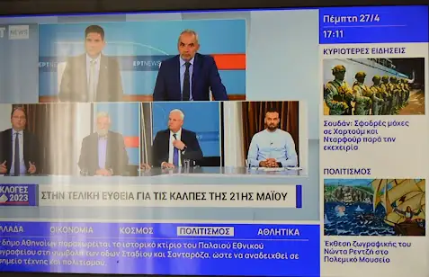
Διότι δεν αποτυπώνει ο δημιουργός Ρεντζής μόνον ένδοξες στιγμές, αλλά αυτόνομα σκηνοθετεί και σκηνογραφεί στους πίνακες του ήθη, έθιμα, τελετές, επαγγέλματα, ηρωικές σκηνές. Όλα αυτά παρουσιάζονται ως πράξεις δράματος χωρίς τέλος, που παίζεται ερήμην των χωροχρονικών αποστάσεων και της τύρβης που η καθημερινότητα προσφέρει. Ελεγεία ζωής άλλοτε η ζωγραφική του με καντάδες και λατέρνα και μοσχοβολιές από γιασεμί κι άλλοτε έπος ηρωικό και τραγικό συνάμα.
Καταλήγοντας είναι εύκολο κανείς να διακρίνει ότι ο δημιουργός πέρα από τη νοσταλγία προσπαθεί να μεταγγίσει τις αλυσιδωτές σχέσεις παρελθόντος και παρόντος, μνημειώνοντας πτυχές της Ιστορίας μας μέσω της αισθαντικής παρατήρησής του, της γόνιμης σκέψης, της μνήμης αλλά και του χρέους. Έτσι το εικαστικό αποτέλεσμα δημιουργεί στον θεατή μια εσωτερική συνομιλία συγκοινωνούντων δοχείων με το ένδοξο αξιακό μας παρελθόν, αφήνοντας στον καθένα μας να μαντεύει, να υποθέτει, να επιθυμεί διότι μπορεί οι πίνακες να δελεάζουν αλλά νοηματοδοτούνται πολλαπλώς για τον καθένα μας.
Κλείνοντας θα ήθελα να ευχαριστήσω τον ζωγράφο Νώντα Ρεντζή που μου έκανε την τιμή να καταθέσω τις σκέψεις μου σήμερα για το μεγάλο του έργο κι εύχομαι η εκφραστική διάθεση να συνεχίσει να έχει αυτή τη μεγάλη δύναμη της έμπνευσης, που αντανακλά το δυναμισμό της ψυχής του και την αγάπη του για τον άνθρωπο και την Ελλάδα.
Στα εγκαίνια της έκθεσης που έγιναν στο ΠΟΛΕΜΙΚΟ ΜΟΥΣΕΙΟ ΑΘΗΝΩΝ παρέστησαν ο κ. Θεόδωρος Στάθης τ. Υπουργός ο κ. Γιάννης Σγουρός, τ. Περιφερειάρχης Αττικής, ο κ. Σταύρος Γεωργάκης, αντιδήμαρχος Δήμου Ηλιούπολης, οι κ. Χρήστος Καλλαρύτης και Κωστής Παπαδόπουλος, δημοτικοί σύμβουλοι του Δήμου Ηλιούπολης, ο κ. Βασίλης Φεύγας υπεύθυνος Στρατηγικού Σχεδιασμού & Επικοινωνίας της Ν.Δ., ο κ. Στέλιος Μαρούλης, πρόεδρος της Ένωσης Λογοτεχνών και Καλλιτεχνών Ηλιούπολης, η κ. Αργυρώ Πίκουλα πρόεδρος της Ιωνικής Λέσχης Ηλιούπολης, το προεδρείο του Ροταριανού Ομίλου Ηλιούπολης, η κ. Ελένη Κατωμελίτη μέλος του προεδρείου της Ένωσης Γυναικών Ελλάδας, ο κ. Γρηγόρης Λαμπράκης αντιπρόεδρος της Π.Ο.Α.Ε.Α. Ηλιούπολης, οι στρατηγοί κ. Αριστομένης Κράγκαρης, κ. Χρήστος Λαζαρίδης, κ. Σπύρος Βαζούρας, ο κ. Πραξιτέλης Καραχάλιος γραμματέας του συνδέσμου απόστρατων Ηλιούπολης ο κ. Δημήτρης Καρακατσάνης αντιπρόεδρος της UNESCO Αθηνών, ο κ. Λάμπρος Λιάβας καθηγητής εθνομουσικολογίας καθώς και οι δημοσιογράφοι κ. Πάνος Σόμπολος, κ. Γιώργος Καρυωτάκης, κ. Πάνος Σαββόπουλος, κ. Χρυσόστομος Πατούλας.
Την έκθεση προλόγισε η καθηγήτρια κ. Θεανώ Σοφικίτου.
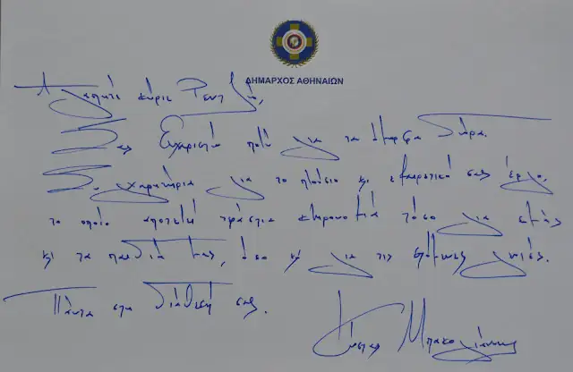
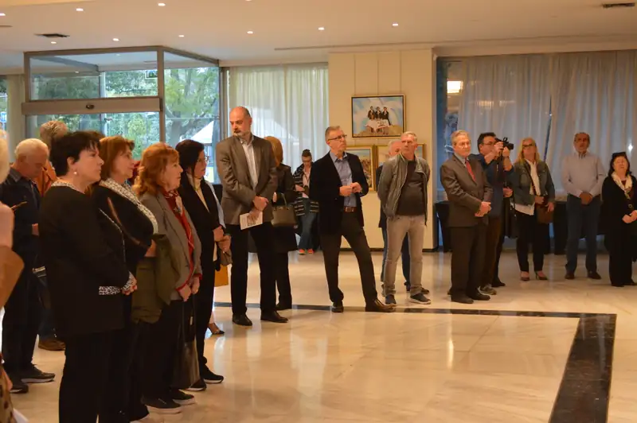
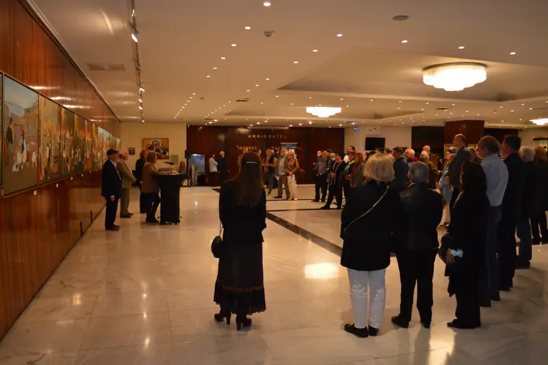
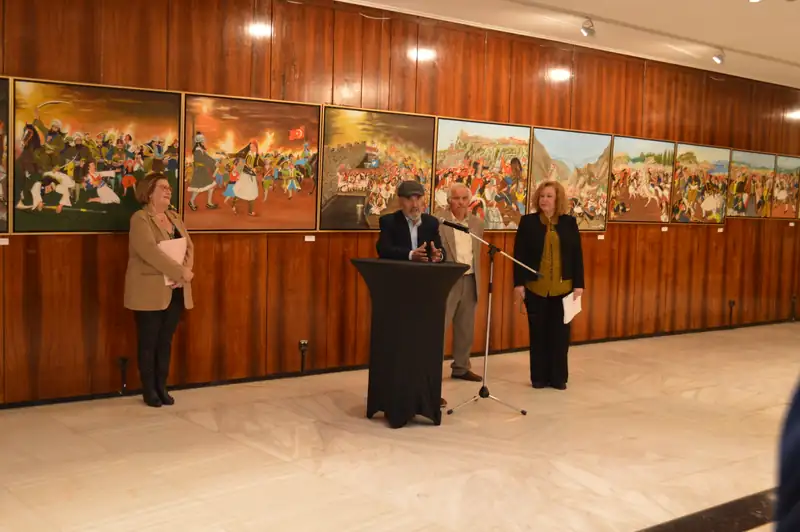
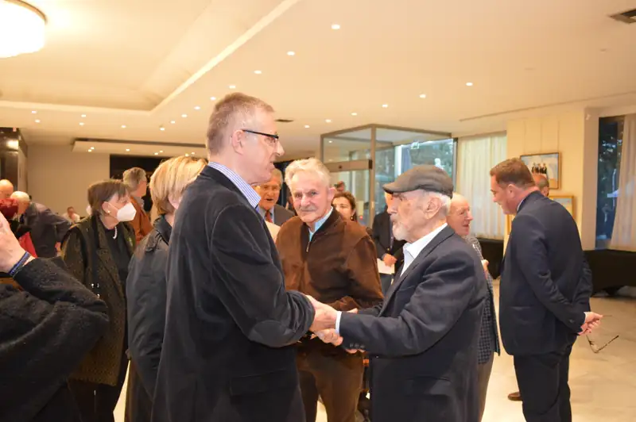
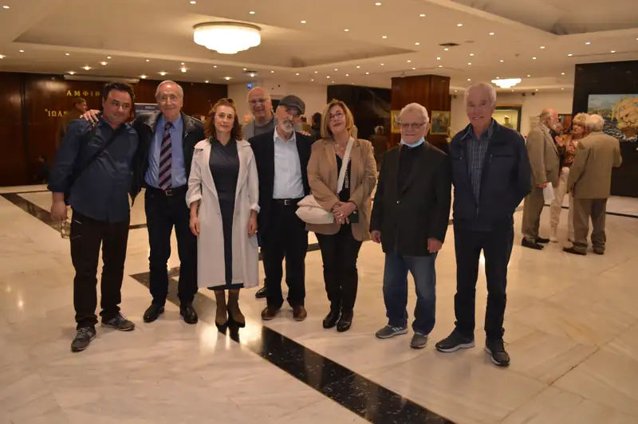
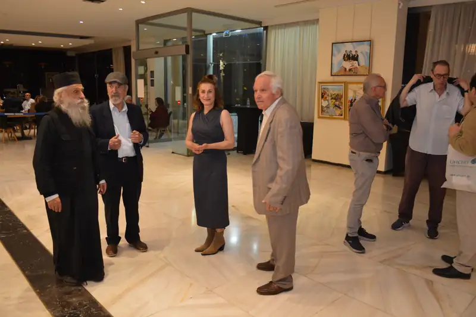
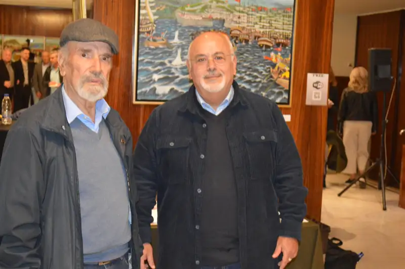
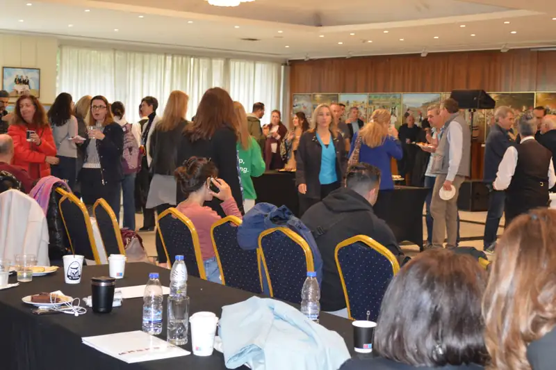
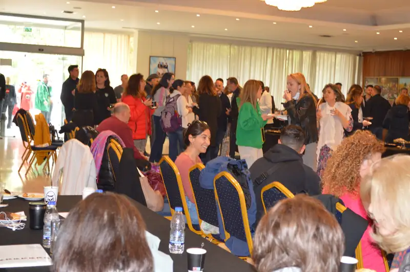